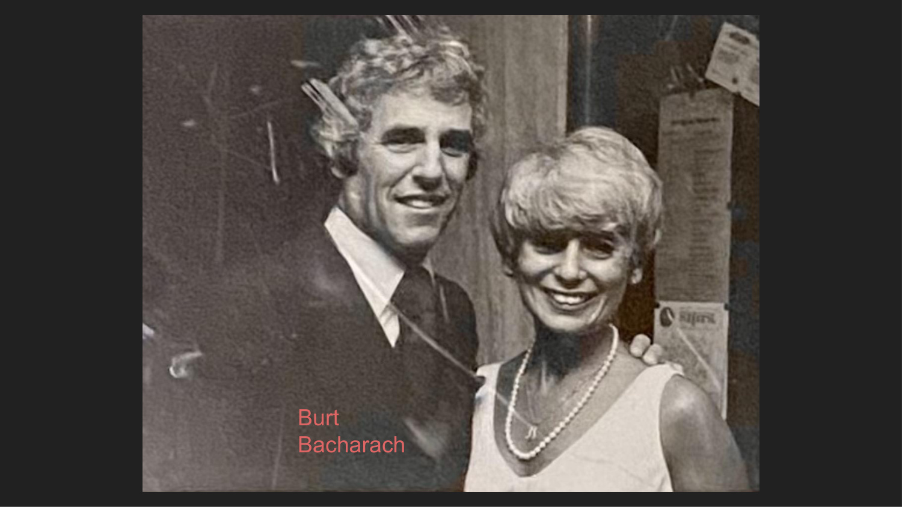
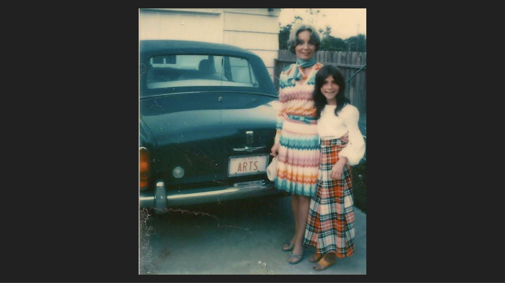

Origins — The Russian Empire
The Squires name is an Americanization. Behind it lies the Skversky family — Jewish immigrants from the Russian Empire who arrived in Pennsylvania in the 1880s and eventually settled in Brooklyn, New York. The name "Squires" was chosen or assigned as an anglicized replacement, and within two generations the original name had largely faded from daily use. Genealogical research has now recovered the original.
The confirmed chain: Heather Denise Squires (Avery's mother) → Barbara Croft Squires (maternal grandmother) → Art Squires (b. 1933, d. 2022 — Avery's maternal grandfather; Houston entertainment producer, Southwest Concerts Inc.) → Harry D. Squires (b. 4 Feb 1897, d. 1963 — née Skversky; musical agent, MCA & William Morris Agency; composer; Brooklyn) → Ben J. Skversky & Rosie Cohen Skversky — both born in Russia in the late 1850s–early 1860s.
The Skversky Family — Russia to Pennsylvania
Ben J. Skversky (b. Sep 1859, Russia) and Rosie Cohen Skversky (b. Nov 1862, Russia) were both born in the Pale of Settlement — the vast zone of the Russian Empire where Jews were legally required to reside. The surname Skversky and the given name Cohen are strongly Jewish markers of the Russian Empire era. They emigrated to Pennsylvania at the start of the great Jewish exodus, likely in the early 1880s following the first major pogrom wave after the 1881 assassination of Tsar Alexander II.
Their children's birth records tell the emigration story directly: some siblings were born in Russia, some in Pennsylvania — a family that straddled the Atlantic crossing in real time.
| Generation | Person | Born | Place | Notes |
|---|---|---|---|---|
| 3rd great-grandparents | Joseph Skverski & Galcbie Skverski | unknown | Russia | Ben's parents — earliest confirmed Skversky generation |
| 3rd great-grandparents (Rosie's side) | Jacob Cohen | b. ~1840, Russia | Russia | Rosie's father |
| 2nd great-grandparents | Ben J. Skversky & Rosie Cohen Skversky | Sep 1859 / Nov 1862 | Russia → Pennsylvania | Emigrated to Pennsylvania ~early 1880s |
| Great-great-grandparents | Harry D. Squires (née Skversky) & Eleanor Young Squires | 4 Feb 1897–1963 / unknown | Pennsylvania → Brooklyn, NY | Ben & Rosie's son · Name Americanized from Skversky to Squires · Musical agent (MCA & William Morris Agency), songwriter, music publisher · Attended ASCAP 20th Annual Dinner, Ritz-Carlton, March 27, 1935 · Sold sheet music on Brooklyn street corner with Eleanor · Wrote unpublished autobiography "The Man Behind the Man" (~600 pages, held at UT Austin Briscoe Center) · GEDCOM had entries garbled as "Harry D. Skversky" and "Hany Sames & Eleanor Sames" — confirmed same person |
| Maternal grandfather | Art Squires | b. 1933 · d. 2022 | Houston, TX | Married Barbara C. Croft (1953) · Founded Southwest Concerts Inc. (1960) · Produced Broadway shows & major concerts throughout Texas · Avery's maternal grandfather |
Harry D. Squires (b. 4 Feb 1897, d. 1963) was Avery's great-great-grandfather — Art Squires' father. Born Harry Skversky in Pennsylvania to Russian Jewish immigrants Ben & Rosie Skversky, he Americanized his surname to Squires and built a life at the center of the American entertainment industry. He worked as a concert and tour manager for orchestras and individual performers, a songwriter, a music publisher, and an agent — at both MCA and the William Morris Agency, two of the most powerful talent agencies in American history.
In 1935, Harry attended the ASCAP 20th Annual Dinner at the Ritz-Carlton — a photograph from that evening is preserved in the archive. ASCAP (American Society of Composers, Authors and Publishers) was the premier organization protecting the rights of music creators, and Harry's presence at their 20th anniversary dinner places him among the recognized composers and publishers of his era.
Harry was also a composer who collaborated on songs with his future wife Eleanor Young — the two wrote music together before they were even married. Their sheet music, including the composition "When the Whole World Forgets (Your Mother Thinks the World Of You)" co-written with Eleanor, is preserved in the archive at UT Austin. Harry and Eleanor also sold sheet music on their street corner in Brooklyn — a vivid image of immigrant Jewish musical life in early 20th century New York.
Harry wrote a lengthy unpublished autobiography, The Man Behind the Man (~600 typescript pages), describing the rewards and frustrations of a life in show business. The manuscript is held at the Dolph Briscoe Center for American History at UT Austin and has never been published. It is one of the most significant primary sources available for understanding this branch of the family. His son Art Squires carried the entertainment industry tradition forward into the next generation.
Sources: Heather Squires Thomas (oral history, April 2026); Art and Barbara Squires Papers, Dolph Briscoe Center for American History, UT Austin (finding aid 00368).
Children of Ben & Rosie Skversky
Harry D. Skversky (later Squires) was one of a large family. These are Avery's 2nd great-granduncles/aunts on the maternal side. The mix of Russian and Pennsylvania birthplaces shows the family emigrated in stages or right at the moment of crossing.
| Name | Born | Place | Notes |
|---|---|---|---|
| Simon Skversky | 25 May 1883 | Soviet Union | May have remained in Russia; fate unknown |
| Harry D. Squires (née Skversky) | 4 Feb 1897–1963 | Pennsylvania → Brooklyn, NY | Avery's great-great-grandfather · Name Americanized to Squires · Musical agent (MCA & William Morris Agency) · Songwriter, music publisher · Composer; sold sheet music on Brooklyn street corner · Autobiography "The Man Behind the Man" at UT Austin |
| Louie Skversky | Sep 1885 | Russia | Born in Russia; emigrated as child |
| Minie Skversky | 26 Jul 1887 | Russia | Born in Russia; emigrated as child |
| Frank Skversky | Sep 1887 | Pennsylvania, USA | Born in America |
| Meyer Skversky | Sep 1890 | Pennsylvania, USA | Born in America |
| David Skversky | Aug 1893 | Pennsylvania, USA | Born in America |
| Eleanor Yampolsky | ~1903 | Philadelphia, PA | Married name Yampolsky; relationship to Skversky line to be confirmed |
| Dorothy Davidoff | unknown | unknown | Married name Davidoff; relationship to Skversky line to be confirmed |
Art & Barbara Squires — Houston's Showbiz Pioneers
Art Squires (b. 1933, d. 2022) grew up steeped in the entertainment world his father Harry had built. He married Barbara Croft (b. 1936) in 1953, and together they built one of the most significant theatrical production empires in the American Southwest. Their first venture together was bringing guitarist Carlos Montoya to Houston's Lamar High School. From that beginning they never stopped.
In 1959 they launched their first major productions — Maurice Chevalier at Jones Hall and the national touring company of My Fair Lady at the Music Hall. The couple founded Southwest Concerts Inc. (SWC) in 1960, incorporated in Texas in 1964, and ran it until 1984. Over those 25 years they brought Broadway and the biggest names in live entertainment to Texas audiences — playing to over three million people across thousands of performances.
— Art Squires, Variety, July 6, 1960
Major Productions & Artists
Southwest Concerts brought the best of Broadway to the Southwest, including A Matter of Gravity, A Chorus Line, Annie, The Wiz, and Hello Dolly. Concert acts included Burt Bacharach, Johnny Carson, Billy Joel, Tom Jones, Liza Minnelli, Bob Marley and the Wailers, Earth Wind & Fire, Warren Zevon, Ben Vereen, Sheena Easton, Blondie, the Marshall Tucker Band, and many more. Art also held personal letters from Lyndon B. Johnson and Katharine Hepburn, and collected autographed programs from Shirley MacLaine, KISS, Tom Jones, Brenda Lee, Mitzi Gaynor, and The Supremes.
Irving Squires — Art's Brother in New York
Art's older brother Irving Squires represented Stage Door Associates in New York and served as general manager of Victor Borge's performances at New York's Golden Theater. Irving also managed productions in New York and Philadelphia, including On A Clear Day You Can See Forever and The Garden of Sweets. The two brothers operated on both coasts of the American entertainment industry simultaneously.
Beyond Concerts
The Squires' ambitions extended well beyond concerts. They published The Playbill, established Sixth Street Live in Austin, launched Westchase Ticketron in 1982 (the first of its kind in the Houston area — allowing audiences to buy tickets for shows nationwide and even campsite reservations), and built Southwest Carriage Limousine Service, which won the National Limousine Association "Operator of the Year" award in 1990–1991. In 1979, SWC won a federal lawsuit against the Arena Operating Company over exclusive booking arrangements at the Summit — Houston's major arena — opening it to fair competition.
The Archive — Dolph Briscoe Center, UT Austin
The papers of Art and Barbara Squires — along with Harry D. Squires' estate materials — are held at the Dolph Briscoe Center for American History at the University of Texas at Austin. The collection spans 5.58 linear feet and includes business correspondence, financial records, legal documents, promotional materials, photographs, and printed material from all of Art and Barbara's companies (1964–1996).
Most significantly, the archive holds Series IX: Harry Squires — approximately 600 typescript pages of Harry's unpublished autobiography The Man Behind the Man, his obituary, programs from productions he was involved with, sheet music for "When the Whole World Forgets," and a photograph from the ASCAP 20th Annual Dinner at the Ritz-Carlton (March 27, 1935).
The collection is physical-only — not digitized. The Reading Room is open Mon–Fri, 10am–5pm, Sid Richardson Hall, UT Austin campus. Free and open to the public. Materials should be requested at least 1 week in advance via the Briscoe Center's Aeon system.
Finding aid: txarchives.org/utcah/finding_aids/00368.xml · A visit to the archive is planned to review Harry's autobiography and the photographic materials.
Skversky → Squires
Skversky is almost certainly a place-name surname — derived from Skwierzyna (a town in what is now western Poland, known in Yiddish as Schwerin an der Warthe), or possibly from another town with a similar root. Place-name surnames were extremely common among Ashkenazi Jews in Eastern Europe; families were often named for the town their ancestors came from, and when they emigrated, those place names traveled with them as surnames.
The Americanization to Squires is a more ambitious transformation than a simple phonetic simplification. The phonetic connection is real — both Sk- and Sq- produce the same initial sound cluster — but the choice of "Squires" goes beyond phonetics. In English social tradition, a squire was a man of minor gentry, a landowner, a person of local standing — a step below knight but above common farmer. It was a title of respect and rootedness. For a Jewish immigrant family from Russia arriving with little, choosing the name "Squires" was an act of American aspiration: we are not refugees, we are landowners, we belong here.
The timeline of this change is revealing. Ben Skversky's children born in Pennsylvania — Harry (1883), Frank (1887), Meyer (1890), David (1893) — all appear in early records as Skversky. But by the time Harry's grandson Arthur was born, the family was thoroughly "Squires." The change happened across two generations, not overnight. Simon Skversky, born in Russia in 1883, may never have made the change at all.
The name "Squires" endures today as Avery's mother's maiden name — Heather Denise Squires — which means that every time that name appears, it carries within it the echo of the Skversky family's crossing from Russia to Pennsylvania, and their deliberate choice to plant themselves in America with a new name that said: we are here, and we are staying.
Philadelphia — The Jewish Immigrant Community
The Skversky family settled in Philadelphia, Pennsylvania — one of the major centers of Jewish immigrant life in late 19th and early 20th century America. Philadelphia had a large, established Jewish community, and it was a common port of entry for Eastern European Jewish immigrants traveling via Hamburg–America or Cunard lines. The tight-knit immigrant Jewish community of Philadelphia is also where the Skversky/Squires line would eventually connect with the Croft/Krafcheck line — Barbara Croft and Arthur Squires meeting in the overlapping world of American Jewish families with Eastern European roots.
Art Squires (b. 1933 · d. 2022) married Barbara C. Croft (b. 23 Jan 1936, Houston, TX) in 1953 and settled in Texas, where they built Southwest Concerts Inc. Their daughter Heather Denise Squires (b. 1963) married Michael Scott Thomas — bringing the Squires/Skversky line into the Thomas family.
For the full Croft/Krawczyk line — Barbara's family and the Polish Jewish roots — see the Croft Line page.
Heather Denise Squires — Avery's Mother
Heather Denise Squires (b. 1963, Texas) is Avery's mother and the daughter of Arthur and Barbara Squires. She married Michael Scott Thomas (b. 1960), son of J.G. Thomas Jr. and Charlotte Crawley. Their marriage in the 1990s joined two completely different American stories: an Eastern European Jewish immigrant heritage that arrived in America within living memory, and a Southern colonial family whose roots in American soil go back to the 1600s.
Living persons policy: birth year only, no full date or location, per site privacy policy.
Photo Highlights
A selection of family photos from the collection. View the full gallery for all photos organized by family line.


